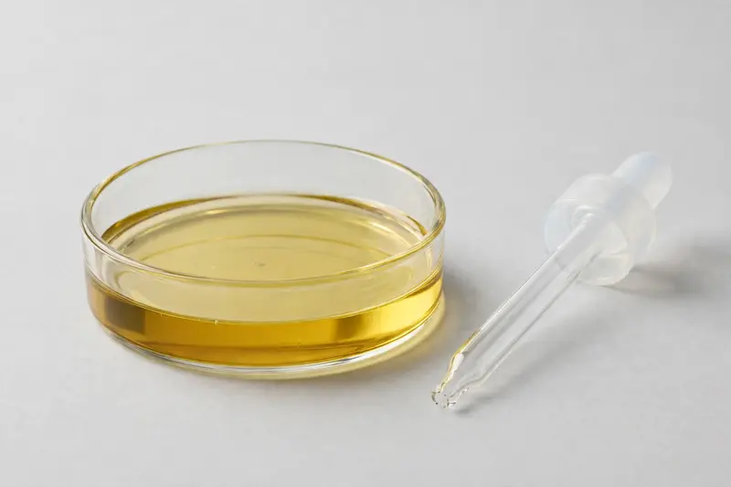

Evening primrose oil — GLA-bearing seed oil for cosmetic and supplement formulations.

Overview
Evening primrose oil is a seed oil from Oenothera biennis, sought after for its gamma-linolenic acid (GLA) content. It is widely requested by cosmetic and supplement brands for formulations positioned around skin and women's wellness. We source through partner producers as a Xi'an trading company, confirming feasibility after receiving your target spec.
Specifications below reflect commonly requested options in the market — not a stock list. Share your target spec and we'll confirm exactly what we can supply, honestly.
| Specification | Details |
|---|---|
| Botanical identity | Evening primrose oil (Oenothera biennis seed oil) |
| Source material | Seeds |
| Marker compound | Commonly requested spec grades: GLA grades; actual specs confirmed on inquiry |
| Appearance | Pale yellow to light golden/amber oil |
| Mesh size | Typically 80–100 mesh (confirm per inquiry) |
| Testing | COA/TDS arranged on request; scope agreed per your spec |
Applications
Documentation
We don't claim in-house labs or certifications we don't hold. COA and TDS documents can be arranged on request, and testing scope is agreed against your specification before supply.
FAQ
Related products
Oenothera biennis
Key marker: GLA Content
View specs →Garcinia cambogia
Key marker: HCA 50-60%
View specs →Amorphophallus konjac
Key marker: Glucomannan 90%+
View specs →Salvia officinalis
Key marker: 10:1 / rosmarinic acid
View specs →Smallanthus sonchifolius
Key marker: FOS
View specs →Plantago ovata
Key marker: Purity & Swell Index
View specs →Send your target spec and volumes — we'll respond with a tailored quotation.
Request a Quote